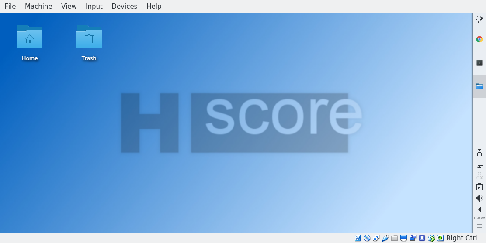
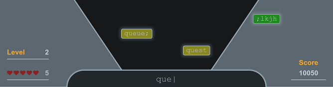
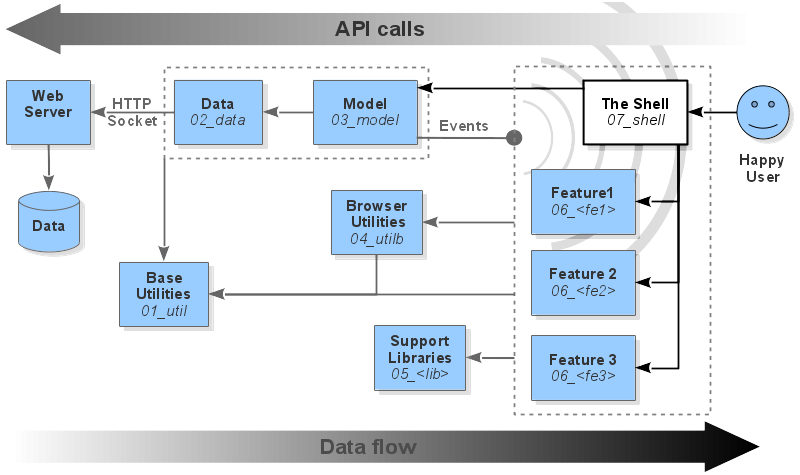

Full-lifecycle starter project for SPAs
hi_score is a full-lifecycle starter project for web application development. It embodies good practice from over 20 years of experience for every lifecycle stage. It also embraces the feature-module (or "web component") design pattern, so it should work well with React or Vue.js. Please do swap assets and libraries as required - that's the point.
package.json as manifestjs/xhi libs and documentationbin/xhi help buildsuperpack to be more reliablebin/xhi dev_cover dependenciesDownload the latest latest virual appliance to try hi_score with the minimum of time and hassle. Pick the latest ova2 image for virutal box, and the latest vmx.zip image for VMware or Parallels. If you need more help with installing a VM or wish to consider other options, please consult the Development platform section.

Open a terminal and enter the following lines. Wait for each to complete before proceeding to the next. The build process prompts the user to review TODO notes. Just press return to accept them.
git clone git@github.com:mmikowski/hi_score.git
cd hi_score
bin/xhi build,dev_start
google-chrome http://localhost:8080/build/latest/distThe bin/xhi tool guides developers through lifecycle stages and employs sophisticated dependency checking to help avoid mistakes. The bin/xhi build,dev_start command installs vendor assets; copies, configures, and patches vendor files for development; configures and starts an HTTP server; lints code with ESLint and other checks, lists TODO items for developer review; runs all regression test suites in test.d; calculates and reports test coverage; minimizes, obsfucates, and creates a unique distribution directory containing multiple applications. The latest build can always be found in build/latest/dist.
hi_score has three example applications. Two (app-ex01.html and app-ex02.html) are quite simple. The third, Typebomb2 (app-tb02.html) is the latest addition and it is far less trivial. Use the Chrome developer tools to inspect the CSS, the DOM, and the JavaScript. Notice how CSS classes are obsfucated and namespaced. A snapshot of the game in action is shown below.

hi_score solves lots of hard stuff out-of-the-box so we can focus on improving things that really matter, like JavaScript, HTML, CSS and application logic. Key benefits are listed below.
bin/xhipackage.jsonpandocThe best way to use hi_score is as a git upstream source. One may then create new application using the hi_score infrastructure without losing upstream improvements or bug fixes.
First create a new empty repository on Github and copy the ssh repository URL, which should look similar to git@github.com:<user>/<repo_name> and then proceed as below:
mkdir -p ~/Github
cd ~/Github
# Clone the empty repository
git clone git@github.com:<user>/<repo_name>
cd <repo_name>
# Create master branch
touch README.<app_name>.md # Add app specific docs here
git add .
git commit -m 'First commit for <repo_name>'
git push
# Verify origin
git remote -v
# origin git@github.com:<user>/<repo_name>.git (fetch)
# origin git@github.com:<user>/<repo_name>.git (push)
# Add upstream repository
git remote add upstream git@github.com:mmikowski/hi_score.git
# Verify upstream
git remote -v
# origin git@github.com:<user>/<repo_name>.git (fetch)
# origin git@github.com:<user>/<repo_name>.git (push)
# upstream git@github.com:mmikowski/hi_score.git (fetch)
# upstream git@github.com:mmikowski/hi_score.git (push)
# Merge changes from upstream and push to origin
git fetch upstream
git merge --allow-unrelated-histories upstream/master
git pushWe suggest you structure your apps as illustrated by the Typebomb2 app. This follows the feature module pattern which has been embraced by the recent libraries such as React and Vue.js (we've been advocating it since 2011, go figure). You may view this guide any time using bin/xhi design. The core concept is to create feature modules that contain their own isolated data and models when appropriate. This is pragmatic and recognizes the fractal nature of MVC. A slicker image is shown below.

We have provided the js/xhi libraries to either provide capabilities directly or as an illustration. For example, in Typebomb2 you will notice the following files for each layer shown in the diagram:
Module layers
=======================================
tb02.00_root.js | ^
tb02.01_util.js load |
tb02.02_data.js order |
tb02.03_model.js | call,
tb02.04_utilb.js | init
tb02.06_css.js events order
tb02.06_<feature>.js | |
tb02.07_shell.js | |
tb02.08_app.js v |All these modules claim a slice of the application namespace (tb02) and use js/xhi libraries in one of three ways:
More specific notes about Typebomb2 app are provide in README.app-tb02.md. One can omit unused layers for a given app. However, for illustrative purposes, we have included all layers for Typebomb2. One can copy these to a new namespace to create a new app and then edit from there.
cd hi_score
cp app-tb02.html app-<ns>.html
cd js
cp tb02.00_root.js <ns>.00_root.js
cp tb02.01_util.js <ns>.01_util.js
cp tb02.02_data.js <ns>.02_data.js
cp tb02.03_model.js <ns>.03_model.js
cp tb02.04_utilb.js <ns>.04_utilb.js
cp tb02.05.css_<feature>.js <ns>.05.css_<feature>.js
cp tb02.06_css.js <ns>.06_css.js
cp tb02.06_<feature>.js <ns>.06_<feature>.js
cp tb02.07_shell.js <ns>.07_shell.js
cp tb02.08_app.js <ns>.08_app.js
cp tb02.08_app-build.js <ns>.08_app-build.js
git add .
cd ../template
cp app-tb02.html app-<ns>.htmlWe need to change all references from tb02 in these new files to our new namespace, <ns>. We will also need to add a new build manifest in package.json. See the xhi_11_BuildMatrix configuration for tb02 as a guide. The result is an architecture that is designed to work well for every phase of the SPA lifecycle.
One can delete all the example apps (tb02, ex01, ex02) from the project if they get in the way. However we recommend retaining at least tb02 for reference because it will continue to be refined along with the hi_score project. One can refresh upstream at any time as shown below.
git fetch upstream
git merge upstream/masterWe recommend you run bin/xhi install,setup after any such merge.
The bin/xhi tool automates good practice for almost every conceivable stage of the SPA development life cycle. Configuration for all stages is found in the NPM package.json file.
The lifecycle stages supported by bin/xhi are shown below. Those marked placeholder are those we plan to address in future releases. Use the command bin/xhi help all to see this list.
$ bin/xhi help all
xhi> START Stage 00 help
xhi> 00 help : Help on 'xhi' tool, use -v for verbose
xhi> 01 install : Download and install npm modules
xhi> 02 setup : Patch and distribute vendor npm assets
xhi> 03 design : Show architecture docs
xhi> 04 dev_pull : Download and merge SCMS assets (git pull)
xhi> 05 dev_upgrade : Upgrade packages to latest
xhi> 06 dev_start : Start local HTTP server
xhi> 07 dev_test : Run regression tests
xhi> 08 dev_lint : Lint changed code
xhi> 09 dev_cover : Create coverage report
xhi> 10 dev_commit : Commit changes with git
xhi> 11 build : Build a distribution
xhi> 12 publish : Upload to publishers
xhi> 13 dev_restart : Cycle local HTTP server
xhi> 14 dev_stop : Stop local HTTP server
xhi> 15 deploy : Upload distribution # placeholder
xhi> 16 prod_start : Start production server(s) # placeholder
xhi> 17 prod_restart: Cycle production server(s) # placeholder
xhi> 18 prod_stop : Stop production server(s) # placeholder
xhi> 19 fetch_info : Fetch feedback # placeholder
xhi> 20 uninstall : Remove xhi # placeholder
xhi> END Stage 00 helpThis tool is used for all NPM lifecycle scripts (such as npm test).
Many sections of this document have been removed because the information is now directly available from bin/xhi help. One can see detailed help on a stage or range of stages by including a -v flag as shown below.
$ bin/xhi help dev_lint -v
xhi> START Stage 00 help
xhi> 08 dev_lint:
xhi> Check lint quality of changed JS code.
xhi> Files in 'vendor|node_modules' directories are ignored.
xhi> Four tests are performed on each file:
xhi> 1. Check for tab characters or trailing space
xhi> 2. Ensure 'use strict'; is employed
xhi> 3. Run 'eslint' on each file (config in package.json)
xhi> 4. List TODO items for developer to review and approve
xhi> Any failed step causes this stage to report failure.
xhi>
xhi> This stage does not "short-circuit" so any and all issues are
xhi> shown for each run.
xhi>
xhi> NPM SCRIPTS : none.
xhi> SUCCESS CRITERIA : All tests complete without error
xhi> END Stage 00 helpA typical workflow is shown below.
# Get list of stages
$ xhi help all
# Run desired stage-range
$ xhi dev_cover,buildThe bin/xhi tool takes a <stage-range> argument. Stages that are provided out-of-order are sorted before running. Example use is shown below.
# Run a single stage
$ xhi install
# Run all stages between 'install' and 'dev_commit' inclusive
$ xhi install-dev_commit
# Run individual stages
$ xhi update,dev_cover
# Run a range using stage numbers
$ xhi 0-5
# Get help on ranges
$ xhi help install -v
$ xhi help install-dev_commit
$ xhi help update,dev_cover
$ xhi help 0-5Even if we specify only one stage bin/xhi will often run more. That is because many stages require prequisites as discussed in the following section.
The bin/xhi has a resolver that ensures all prerequisite stages are run but only if required. For example, if we run bin/xhi build right after cloning the Github repository, it will run all the stages needed to ensure a quality build including installation of the npm libraries. If we run it again, many stages will be omitted because they are known as complete. Conversely, if we run dev_upgrade all npm packages will be updated to the latest revision. On any subsequent build, bin/xhi will re-install all npm packages, reset the environment, and re-test the codebase because this is required when libraries are updated. This capability is provided by setting goal and environment prerequisites.
Goal prerequisites are stages that are always run before before the target stage. For example, if we run bin/xhi dev_commit the dev_lint, and dev_test stages will be run first to ensure the code quality is acceptable. If either prerequisite fails, bin/xhi exits immediately (with an exit code of 1) and the target stage is not attempted. Goal prequesites are configuired in package.json.xhi_commandTable.
These are stages that must be successfuly completed in the development environment. For example, if we run bin/xhi dev_commit but have not run bin/xhi install, the install stage will be run before the dev_commit stage. The success or failure of each stage is saved in the state file (lib/xhi_state.json) and the next stage is run. If the install stage succeeds it will not be included in future prerequisite calculations.
Environment prerequisites may be invalidated. For example, if bin/xhi install or bin/xhi upgrade fail, the tool will mark the install stage as failed and the stage will be attempted again in the next bin/xhi invocation that requires it as a prerequisite.
Explicitly requested stages will always run regardless of their last success status. For example, bin/xhi dev_lint may or may not run the install stage, but bin/xhi install,dev_lint will always run the install stage because it is explicitly listed. bin/xhi help-dev_lint will also run install since it is explicitly within the range provided (help-dev_lint). We can reset the status by removing the stage_status_map from the lib/xhi_state.json file.
If all the stages of a range are successful an exit status of 0 is provided. If any stage fails processing of the range stops and an exit status of 1 is provided. In Bash, the return status is available in the $? environment variable. If we apply minor adjustments to disable terminal interaction bin/xhi should be capable of integration to other tool chains.
We use the code style presented in Single Page Web Applications - JavaScript end-to-end (see reviews on Amazon) in the upcoming 2nd edition. The full code standard is found in the docs directory.
Our baseline compatibility is IE9+. Those supporting IE 8 have our sympathy.
The server component of hi_score is designed to run on industry-standard hardware, cloud instances like Amazon EC2, and containers. Our server platform is Ubuntu 16.04 LTS. Later version of Ubuntu and other distributions should work well.
Download the latest latest virual appliance to try hi_score with the minimum of time and hassle. Pick the latest ova2 image for virutal box, and the latest vmx.zip image for VMware or Parallels.
If you are using Ubuntu Linux 16.04+ for your workstation or deployment everything should just work with as long as the required libraries are installed as shown below:
# Install required libraries
sudo apt-get install build-essential git \
libfile-slurp-perl liblist-moreutils-perl \
mysql-client mysql-server net-tools \
openssh-server pandoc pandoc-citeproc \
unzip zip
# Install recommended libraries
sudo apt-get install apt-file htop kdiff3 \
meld ppa-purge sysstat vim-gtk vim-nox vim-syntax-gtk
# Install nodejs
curl -sL https://deb.nodesource.com/setup_8.x | sudo -E bash -
sudo apt-get install -y nodejs
# Install MongoDB 3.x (optional)
# See their website for details.Most Ubuntu derivatives such as Mint or Kubuntu should work just as well.
Other Linux distributions should generally work as long as the same libraries can be installed as with Ubuntu. It works fine on current versions of CentOS. Development libraries should be installed as shown below.
$ yum install gcc gcc-c++ make openssl-devel
# We're probably missing git and a few other tools hereSee this guide for NodeJS package installation on other Linux distros. Here is a more generic guide for Kubuntu and Ubuntu.
The easiest way path to get familiar with this project on Mac is probably to use a product like Parallels or VMFusion to import the vmx.zip (unzip this file before use). VirtualBox also runs on Mac but it doesn't integrate as well to the host OS as these products.
One should be able to run development natively on the Mac but with some effort. We would need at the very least Bash 4+, GNU Core utilities, NodeJS, Git, PanDoc, Perl File::Slurp, and SSH server.
We recommend using a virtual machine as detailed above.
The bin/xhi setup stage patches and deploys vendor assets using the xhi_02_SetupMatrix configuration found in the package.json file. This field is correlated with the with the devDependencies map to ensure assets are properly label, patched, distributed, and ignored by Git.
Assets are copied to their destination directory with their version number appended to their names. The .gitignore file instructs git to ignore all these files as their development management is external to our project. Everytime bin/xhi setup is run the vendor directories are deleted and recreated.
Vendor executables are copied to the bin/vendor directory.
Vendor font files are copied to the font/vendor directory. These fonts are currently installed:
Vendor images are be copied to the img/vendor directory.
Client libraries are copied to the js/vendor directory. This makes them available to the web server. The following libraries are installed:
NodeJS libraries are not copied to a vendor directory. We may change this if we decide to create a server distribution. The following libraries are installed:
Developent libraries are used for testing a building code. They are not copied to a vendor directory. The following libraries are installed:
Vendor CSS libraries are copied to the css/vendor directory. The following CSS files are installed:
The xhi_02_SetupMatrix.patch_matrix directs patch application.
The bin/xhi setup stage applies patches to vendor assets. The configuration for patches are in package.json in the xhiPatchMatrix map. The patches are stored in the patch directory.
The patch capability allows us to use great tools tweaked for our needs while maintaining the upstream source. For example, we patch uglify-js to support object property name compression and shuffling by superpack. We also patch font-awesome CSS files to have the correct path for our environment.
Use bin/xhi build or bin/xhi make or bin/xhi 11 (where 11 is the stage number) to build a distribution. The build script concatenates, compresses, and obsufucates JavaScript and CSS. It copies only the required assets into the the distribution directory (build/<build_id>/dist). The result loads faster, runs faster, and typically consumes roughly 1/50th (2%) of the development environment.
$ ## Show disk usage of all development files
$ cd hi_score && export PATH=`pwd`/bin:$PATH;
$ du -sh .
148M
$ ## Get disk usage of all distribution files
$ xhi build && cd build/latest && du -sh .
3.6MThe bin/xhi build stage uses uses superpack to analyze symbols (variable names, object properties, and labels) and replaces them with shortened and shuffled keys. The shortest keys are used for the most frequently found symbols. superpack reports the key-to-symbol mapping and the frequency of use which makes further optimizations by pruning code easier (see build/<build-number>/stage/<name>-sp.diag for mapping and key use). Projects with many object properities can be compressed an additional 50% using superpack and this hinders reverse-engineering of the compressed code.
The build process enhances security because only a tiny, currated, obsfucated portion of our code is published and sensitive data such as SCMS metadata, documentation, lookup-maps, and development assets are omitted. We can publish these assets elsewhere at our discretion. The distribution also reduces the dozens of HTTP calls to just a few. This can reduce load time significantly as illustrated below.
| Attribute | Original (%) | Minified (%) | Superpack (%) |
|---|---|---|---|
| Size | 601,027 (100.0%) | 215,400 ( 35.8%) | 162,494 ( 27.1%) |
| Gzipped | 151,716 ( 25.2%) | 62,895 ( 10.4%) | 57,275 ( 09.5%) |
| Attribute | Original | Minified (%) | Superpack (%) |
|---|---|---|---|
| HTTP reqs | 27 (100.0%) | 4 ( 15.4%) | 4 ( 15.4%) |
| Local ms | 231 (100.0%) | 166 ( 71.2%) | 144 ( 62.3%) |
| Deploy Size | 121 MB | 8 MB ( 6.6%) | 8 MB ( 6.5%) |
The load time measurements were made using a local HTTP server which is almost certainly a best-case scenario. We expect to add results for a remote server in the future.
Namespaces enable us to provide a suite of web apps that share a great deal of code but have instances and data cleanly isolated. Namespacing across JS and CSS can help one trace behaviors to the controlling code faster and with greater accuracy. We can open them in the Chrome browser (bin/xhi install && google-chrome ex*.html) and use the developer tools to see this in practice.
When we view Example 1 (ex01.html) we can open the browser development tools (press <shift>-<ctrl>-i or <shift>-<cmd>-i on a Mac), type ex01 into the JavaScript console and press <return> to inspect that value. We can see that this single variable that contains our entire application. When we enter ex02 we see that it is undefined. When we visit the Example 2 (ex02.html) instead we can see that ex01 is undefined and ex02 contains our app code using a similar process.
We also namespace our CSS classes to avoid collisions. When we inspect the HTML of the Example 1 app we can see that nearly all classes start with an ex01- prefix. When we inspect Example 2 tab we find the prefix is ex02-. As with the JavaScript namespacing, the prefixes are hierarchical. For example, the ex02-_lb_ class was generated for use by the ex02-_lb_ module. During the build process selectors are shortened along with property values as long as they use the property-name structure. For example, ex02-_shell_title_underscore_ will compress to something like ex02-jp.
Any improvements or suggestions are welcome through the issues tracker. Pull requests are especially appreciated.
2016, 2017 Michael S. Mikowski (mike[dot]mikowski[at]gmail[dotcom])
MIT
getDeepMapVal and setDeepMapVal with more powerful and tested getStructData and setStructDataxhi/01_util.jsjscoverage with much more complete and recent istanbulcast routines and detail their usecast methodsjsdom to expand testing to modules that use jQuerymakeThrottleFn and makeDebounceFninstall script with prep-libs (v0.6.17+)npm run buildifynpm run prep-libs to npm run setupnpm run cover to npm run coveragenpm run covera to npm run publish-coveragenpm run buildify to npm run makevar => letbin/xhi tool development capabilitiesbin/xhi setup : Implement env prequisites and lib/xhi_state.jsonbin/xhi setup : Auto-create lib/xhi_state.json if requiredbin/xhi build : Create build directory like dist/\<build-number\>bin/xhi build : Link dist/latest to latest buildbin/xhi build : Do not auto-increment build until next commitbin/xhi dev_cover : Move to dist/\<build-number\> directoriesbin/xhi"help" : "bin/xhi help""make" : "bin/xhi make""setup": "bin/xhi setup""test" : "bin/xhi test"package.jsonlatestlib/xhi_state.jsonjs/xhi/01_util.js::makeSeriesMap across timezonespackage.json as manifestjs/xhi libs and documentationbin/xhi help buildsuperpack to be more reliablebin/xhi dev_cover dependencies000025-1c002dbin/xhi run range(o) Update [quick reference][_03] code standard
bin/xhi enhancementsbin/xhi build convert: superpack Perl to JS, use package.json configbin/xhi dev_start, prod_start HTTPS : Use LetsEncrypt to use HTTPS by defaultbin/xhi dev_start, prod_start HTTP/2: Configure for HTTP/2 if feasiblebin/xhi deploy implement: Add configuration and capabilitybin/xhi publish : Push to NPM